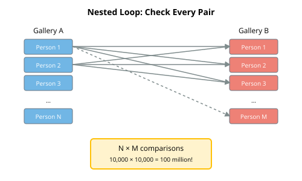
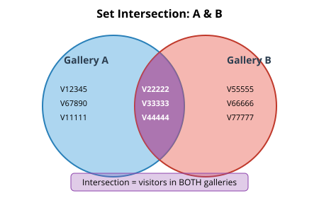

Programming, problem solving, and algorithms
CPSC 203, 2026 W1
October 8, 2026
Announcements
- Labs next week: Monday labs are cancelled due to the holiday. Students can go to another lab section.
- Practice examlet 2 is available.
- Examlet 2 next week (Thursday Oct 15 to Monday October 19).
- Lab 4 and POTW 4 due Sunday October 11, 8pm.
- Project 1 due Monday October 26, 8pm.
The Setup: The Great Data Heist.
Last night, someone broke into the Vancouver Museum of Data Science.
The thief stole the legendary Golden DataFrame — an artifact said to contain the answers to all data questions.
You’ve been called in as data detectives to solve the case.

Your Tool: The Dictionary
Dictionaries are Python’s data structure for storing key-value pairs.
- Given the key, we would like to quickly retrieve the corresponding value.
| Key | Value |
|---|---|
| name | Prof. Histogram |
| department | Statistics |
| alibi | was at the faculty meeting |
| motive | jealousy of the DataFrame’s power |
- Launch Class Activity: Dictionary Heist in PrairieLearn.
- Open
data_heist_dictionaries.py.
Dictionaries as Compound Data Representations
Compound Data
Dictionaries / key-value lookup is yet another way to represent compound data:
| Representation | Elements | Data |
|---|---|---|
| lists | integer indexes 0 to \(n\) | values |
| namedtuples | fields | values |
| dataclasses | attributes | values |
| row of a dataframe | columns | values |
| dictionary | keys | values |
Billboard Hot 100 Data as a Dictionary
Why Dictionaries (for Compound Data)?
Dictionaries are probably the most common Python representation for compound data because
- They require no overhead to create (no class definition).
- Have very simple and compact syntax.
- Are extremely efficient for common operations on a single piece of compound data.
- In particular, looking up a key takes the same amount of time regardless of the number of keys in the dictionary.
And the less you have to think about your data structure, the better. Right?
Dictionaries as Key-Value Lookup
Not Just a One-Trick Pony
Dictionaries / key-value lookup is useful for solving other common problems.
- Tracking membership.
- Counting appearances / frequencies.
- Representing a map over a discrete domain.
- Grouping by category.
🚪 Room 1: Membership and Intersection
Common Pattern: Tracking Membership
For example: Have we seen this item before?
defaultdict(bool) returns False for missing keys — no KeyError!
Approach 1: Using Lists
The thief visited both Gallery A and Gallery B before the theft.
Your mission: Find everyone who was in BOTH rooms.
Let’s try using just lists:
- Construct a list of everybody who visited Gallery A.
- Construct a list of everybody who visited Gallery B.
- For every person in list A:
- For every person in list B:
- If they match, add them to the intersection list.
- For every person in list B:
The Problem with Nested Loops

- With 10 people in Gallery A and 12 in Gallery B: 10 × 12 = 120 comparisons
- With 10,000 in each: 100,000,000 comparisons!
- With \(n\) people in Gallery A and \(m\) in Gallery B?
Approach 2: Using Dictionaries
Let’s try using dictionaries (and lists):
- Construct a dictionary of everybody who visited Gallery A.
- Construct a list of everybody who visited Gallery B.
- For every person in list B:
- If they are in dictionary A, add them to the intersection list.
Why Is This Faster?
- Step 1: Look at each Gallery A person once → 10 operations
- Step 2: Look at each Gallery B person once → 12 operations
- Total: 10 + 12 = 22 operations (not 120!)
Dictionary lookup is instant — it doesn’t matter how many keys are stored!
Common Pattern: Set Intersection

Use when: Finding common elements, detecting duplicates
🚪 Room 2: Appearances and Frequencies
Pattern: Counting Frequencies
Use case: Count how many times each item appears.
Avoid the Extra Check?
Could use a defaultdict(int), which would assign value of 0 to any missing key.
Alternatively, this pattern appears so often that there is an even more specialized version of a dictionary: Counter.
Room 2: The Cipher
You found a mysterious note left by the thief:
WKLV LV WKH FRGH: GLDJRQDOIt appears to be a substitution cipher. The thief replaced each letter with another.
Frequency Analysis
In English, some letters appear more often than others:
| Letter | Frequency |
|---|---|
| E | 12.7% |
| T | 9.1% |
| A | 8.2% |
| O | 7.5% |
| I | 7.0% |
If we count the letters in the cipher, the most common one is probably E!
🚪 Room 3: Finding Complements
Pattern: Finding Complements
Use case: Find two numbers that add up to a target.
The Complement Pattern
As we scan, we remember what we’ve seen and check if the complement exists!
Room 3: The Vault
The vault has a two-dial combination lock.
Each dial shows a number, and they must multiply to 435,599.
The thief left behind a piece of paper with two lists:
- 125, 204, 214, 242, 328, 350, 381, 659, 754, 854, 859
- 130, 132, 189, 195, 323, 532, 658, 661, 704, 792, 858
Find the two numbers (one from each list) that open the vault!
🚪 Room 4: Grouping
Pattern: Grouping by Category
Use case: Organize items into categories (like pandas’ groupby!).
Room 4: The Suspect Board
We have testimony from five suspects about where they were at 8pm:
Group suspects by their alibi to find who was together!
Let’s Practice!
- Launch Class Activity: Dictionary Heist in PrairieLearn.
- Open
STUDENT_heist_nb.py. You’ll solve 4 puzzles with LARGE datasets.
Inspired by Advent of Code puzzles!
Summary
Dictionaries give you fast lookup by key.
The patterns we learned:
- Record — Store compound data
- Membership — Have I seen this before? (
defaultdict(bool)) - Counting — How many of each? (
Counter) - Complement — Find the matching pair
- Grouping — Organize by category (
defaultdict(list))